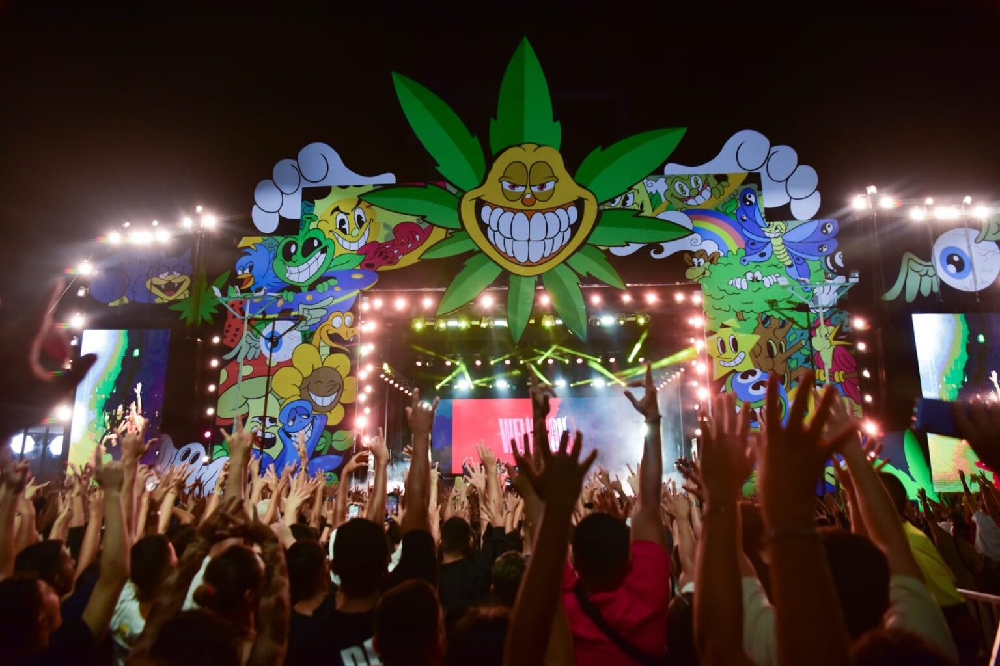

✨ Festival de Criadoras — Grande Encontro Anual
Você foi selecionada para o Festival de Criadoras.
Apenas as participantes confirmadas receberão o kit Exclusivo.
📍 Local do Evento: O Marina Park, À beira-mar de Fortaleza

Imagem ilustrativa do Palco Marina Park, Em Fortaleza 2026 — CE.
📅 Cronograma do Festival
| Horário |
Artistas |
Duração |
Localização |
| 18:00 - 19:30 |
Teto |
1h30min |
Palco Principal |
| 19:30 - 21:00 |
Matue |
1h30min |
Palco Principal |
| 21:00 - 22:30 |
Brandão85 |
1h30min |
Palco Principal |
📜 Informações Importantes
📋 Regras do Festival
- É obrigatório apresentar documento com foto no credenciamento.
- Menores de 16 anos devem estar acompanhados.
- Não é permitido gravar em áreas restritas do evento.
- Respeite o espaço e o trabalho das outras criadoras.
- O conteúdo produzido no desafio deve ser postado até as 18h.
🔗 Voltar ao Início da Página
© 2026 Festival de Criadoras. Todos os direitos reservados.
Endereço: Av. Beira-Mar, 1000 - Praia do Céu, Fortaleza - CE
Contato: festivaldecriadoras@gmail.com